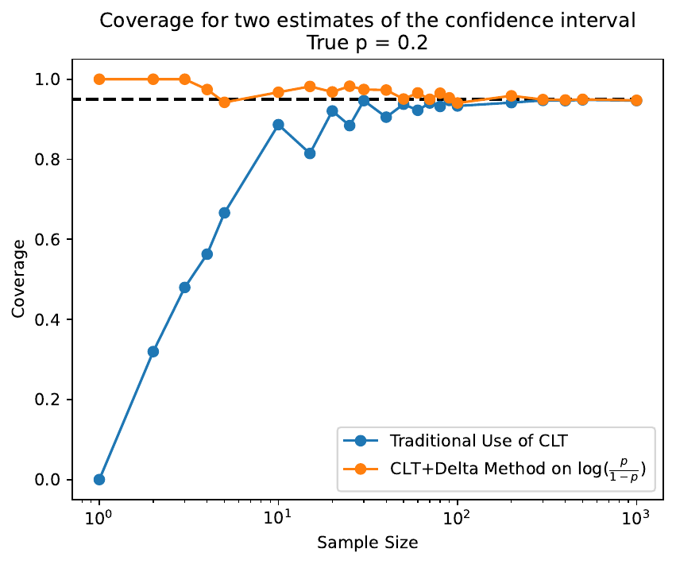

A better confidence interval for proportions
The Problem with Small Samples
The CLT guarantees that the sample proportion \(\hat{p}\) is asymptotically normal, but the confidence interval is not guaranteed to be between \([0, 1]\), and is generally not efficient. This post demonstrates how the Delta Method can yield a much better confidence interval, and the calculation required to do so is very simple.
Under the Central Limit Theorem, \(\hat{p} \sim \text{N}(0, \frac{p(1-p)}{n})\) as \(n\rightarrow\infty\). We can use this to give a confidence interval for p: \[\widehat{\text{CI}(p)}=\hat{p} \pm q_\alpha\sqrt{\frac{p(1-p)}{n}}\] where \(\alpha\) is the false positive rate and \(q_\alpha:=\int_{x=1-\alpha/2}^\infty \mathbb{P}(N(0, 1) = x)\). But for small \(n\), this won’t be exact because \(p\in [0, 1]\), but \(\widehat{\text{CI}(p)}\) could be outside \([0, 1]\). Generally, for small \(n\), we don’t have any guarantee that \(100\cdot(1-\alpha)\%\) of the confidence intervals will contain \(p\).
New Method
For \(x_1, ..., x_n \sim X\) with mean \(\mu\) and variance \(\sigma^2\), the CLT says: \[\sum x_i/n \sim N(\mu, \sigma^2/n)\] as \(n\rightarrow \infty\). Let’s say we want to transform the sample average by appling a function \(f\) to it. The CLT still applies! Specifically:
\[f(\sum (x_i)/n) \sim N(f(\mu,\sigma^2/n\cdot \left[f'(\mu)\right]^2)\]
This is called the Delta Method. So here’s an idea for how to make a better confidence interval for the proportion: I’ll tranform \(\hat{p}\) to range between \((-\infty, \infty)\), find a confidence interval for that, then undo the transformation to the resulting lower and upper bounds so that they are also inside \([0, 1]\). Any function \(f: [0, 1] \rightarrow (-\infty, \infty)\) will work, but I’ll pick one similar to what we saw in class: \(f(p)=\text{log}(\frac{p}{1-p})\).
If you do the math, you’ll see that \(f'(p) = \frac{1}{p(1-p)}\), and \(f^{-1}(z) = \frac{e^z}{1+e^z}\). So the Delta Method says the CLT on the transformed proportion is:
\[f(\hat{p}) \sim N\left(f(p),\ \frac{1}{p(1-p)n}\right)\]
and the transformed confidence interval is:
\[(\text{lower}, \text{upper}) = f(\hat{p}) \pm q_\alpha\sqrt{\frac{1}{\hat{p}(1-\hat{p})n}}\]
To put get back a new confidence interval for \(\hat{p}\), I’ll apply \(f^{-1}\) to the confidence interval bounds. That is, my new confidence interval is:\[\left(\frac{e^\text{lower}}{1+e^\text{lower}},\ \frac{e^\text{upper}}{1+e^\text{upper}}\right)\]
Performance
For a range of true proportions \(p\) and sample sizes \(n\), we would like a confidence interval to actually contain the true proportion \(100\cdot(1-\alpha)\%\) of the time. No more, no less. The following plots show that the traditional use of the CLT is reliably off– specifically, it under-covers the true proportion in small sample sizes. The new method is pretty much spot on. Yay!
Finally, I’m adding the code I wrote to create these
simulations and plots.
Plots
Python Code
import numpy as np
import scipy.stats as ss
import copy
def test(n, B, p, t=.01, alpha=.05):
q = ss.norm(0, 1).ppf(1 - alpha/2)
### traditional method
ph = ss.binom(n, p).rvs(B) / n
old_coverage = np.logical_and(
ph - q * np.sqrt(ph*(1-ph)/n) < p,
ph + q * np.sqrt(ph*(1-ph)/n) > p
)
### new method
# nuisance: truncate so ph strictly between 0 and 1
pht = copy.deepcopy(ph)
pht[pht == 0] = t
pht[pht == 1] = 1-t
lower = np.log(pht/(1-pht)) - q / np.sqrt((n * pht * (1-pht)))
upper = np.log(pht/(1-pht)) + q / np.sqrt((n * pht * (1-pht)))
new_coverage = np.logical_and(
np.exp(lower)/(1+np.exp(lower)) < p,
np.exp(upper)/(1+np.exp(upper)) > p
)
return np.mean(old_coverage), np.mean(new_coverage)
ns = (1, 2, 3, 4, 5,
10, 15, 20, 25, 30,
40, 50, 60, 70, 80, 90, 100,
200, 300, 400, 500, 1000)
ps = (.01, .05, .1, .2, .3)
tests = [np.array([test(n, B=1000000, p=p, t=.0001) for n in ns]) for p in ps]
for example_p_ix in range(5):
plt.semilogx((0, max(ns)), (.95,)*2,
linewidth=2, linestyle="--", c="#000000")
plt.plot(ns, tests[example_p_ix][:,0], "o-",
label="Traditional Use of CLT")
plt.plot(ns, tests[example_p_ix][:,1], "o-",
label=r"CLT+Delta Method on log($\frac{p}{1-p}$)")
plt.xlabel("Sample Size")
plt.ylabel("Coverage")
plt.title(f"Coverage for two estimates of the confidence interval\nTrue p
= {ps[example_p_ix]}")
plt.legend()
plt.savefig(f"~/coverages/plot_{example_p_ix}.pdf",
format="pdf", bbox_inches="tight")
plt.close()